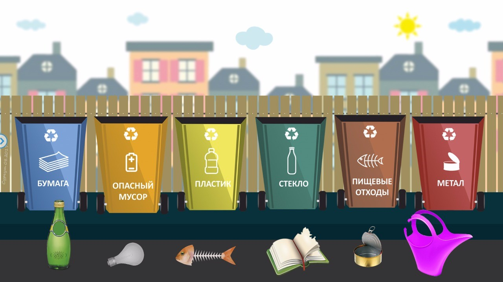
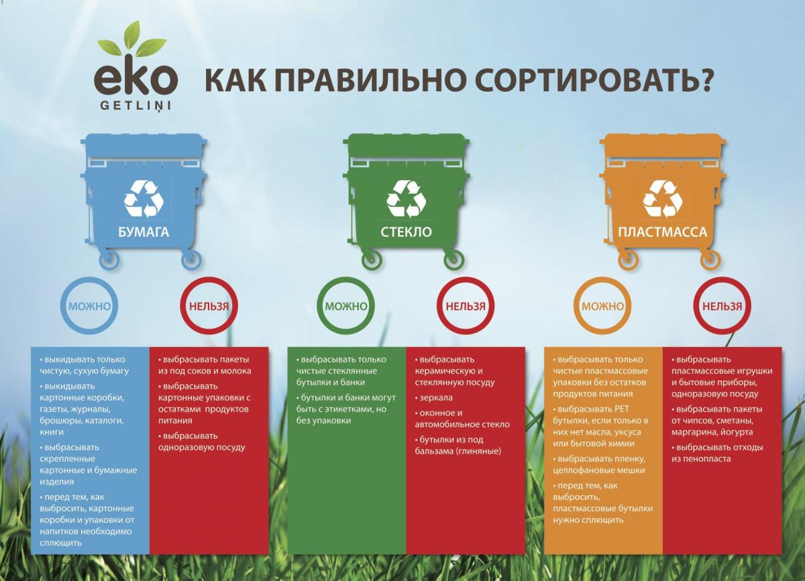

Разделение мусора, или, точнее, раздельный сбор мусора, выборочный сбор отходов (не путать с сортировкой мусора) — действия по сбору мусора в зависимости от его происхождения. Разделение мусора делается в целях избежания смешения разных видов отходов и загрязнения окружающей среды.
Данный процесс позволяет подарить отходам «вторую жизнь», в большинстве случаев благодаря вторичному его использованию и переработке. Разделение мусора позволяет наиболее эффективно использовать ресурсы, возвращая в производственный оборот перерабатываемые виды отходов. Отделение пищевых и растительных отходов помогает предотвратить образование возгораемых газов на свалках. Следовательно, уменьшается вероятность пожаров на полигонах и вредное влияние на окружающую среду.
